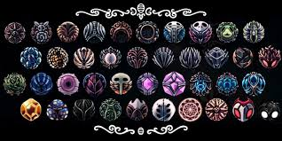
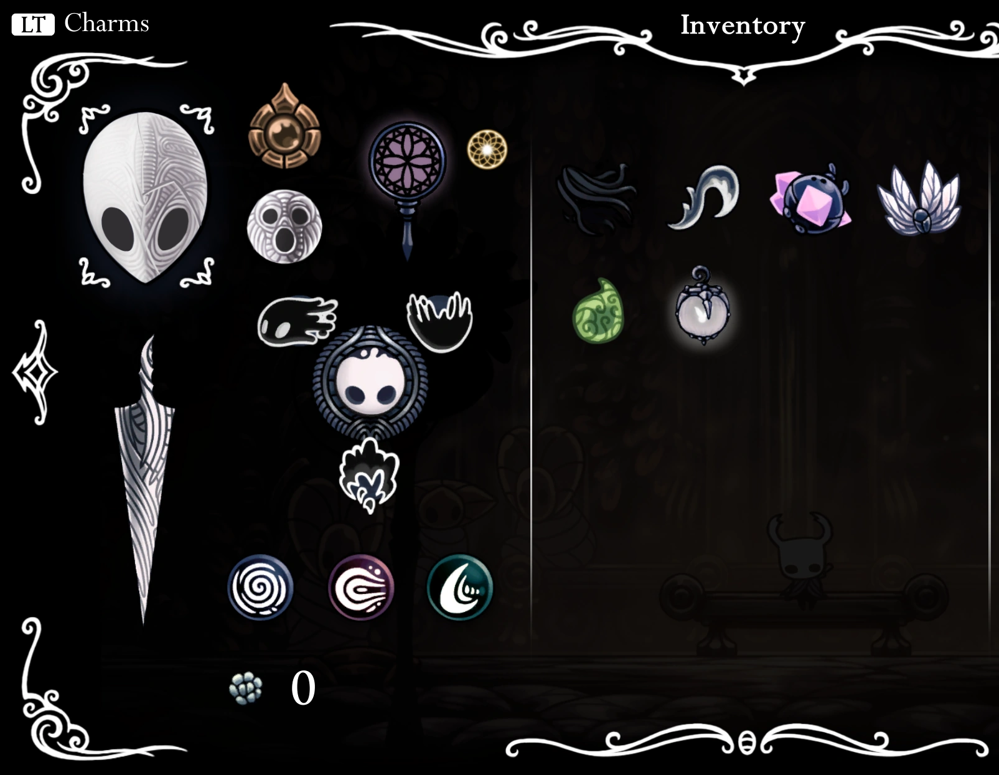
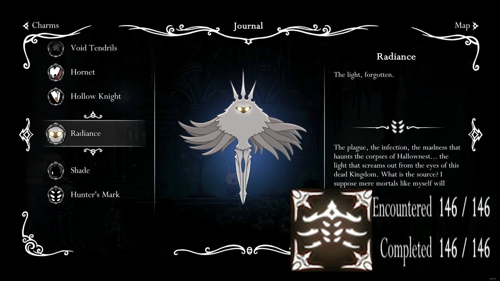

Sobre o Jogo
Hollow Knight é um jogo de ação e aventura desenvolvido pela Team Cherry, que transporta os jogadores para o misterioso e encantador mundo de Hallownest, um reino subterrâneo habitado por insetos e criaturas peculiares. Com uma jogabilidade de plataforma metroidvania, o jogo oferece uma experiência imersiva onde exploração, combate e descobertas se entrelaçam de forma única. Os jogadores assumem o papel de um cavaleiro sem nome, em uma jornada para desvendar os segredos de Hallownest, enfrentando inimigos desafiadores e desbravando cavernas e templos abandonados. O estilo artístico, a trilha sonora envolvente e a complexidade da narrativa, que se revela de forma sutil e não linear, fazem de Hollow Knight um dos títulos mais aclamados da última década.

Amuletos
Os amuletos em Hollow Knight são itens equipáveis que concedem habilidades e melhorias ao Cavaleiro, como aumento de dano, cura mais rápida, feitiços fortalecidos e atração automática de Geo. Cada amuleto ocupa um número específico de espaços, e o jogador pode expandir a quantidade de slots disponíveis ao longo da jornada. Eles permitem personalizar o estilo de jogo, oferecendo desde vantagens ofensivas, comp ataques mais rápidos com o Quick Slash, até suporte defensivo, como o Grubsong, que gera alma ao receber dano. Uma boa escolhe deles, pode influenciar a sua experiênciaao jogar

Habilidades
Em Hollow Knight, o Cavaleiro ganha diversas habilidades ao longo de sua jornada, que são essenciais para explorar e lutar. O Manto permite um salto rápido, enquanto o Golpe de Descarga possibilita ataques rápidos em movimento. O Pulo Duplo facilita alcançar áreas altas, e o Voo do Vazio permite atravessar obstáculos e inimigos. Além disso, habilidades como Vengeful Spirit e Howling Wraiths oferecem ataques à distância, e o Desolate Dive permite mergulhar no chão para danificar inimigos. Essas habilidades são fundamentais para avançar e enfrentar desafios no jogo.

Mapa
Em Hollow Knight, o mapa de Hallownest é vasto e interconectado, com várias regiões únicas para explorar, como o Reino dos Vazio, Fungal Wastes e City of Tears. Inicialmente, o mapa está em branco, e o jogador deve explorá-lo para preenchê-lo, utilizando o Grimório de Mapas e comprando atualizações com o vendedor Cornifer. Conforme avança, o Cavaleiro adquire habilidades que permitem acessar novas áreas e descobrir segredos, tornando a exploração uma parte essencial da jornada.

Bestiário
O Bestiário de Hollow Knight é uma coleção detalhada de informações sobre os diversos inimigos e criaturas que o Cavaleiro encontra em sua jornada por Hallownest. Cada inimigo possui uma descrição única, incluindo seu comportamento, fraquezas e características especiais. À medida que o jogador derrota esses inimigos, o Bestiário é atualizado, proporcionando uma visão mais profunda do mundo e de suas ameaças. Além disso, o Bestiário ajuda a completar o jogo, oferecendo recompensas ao alcançar marcos específicos, como derrotar certos grupos de inimigos.
